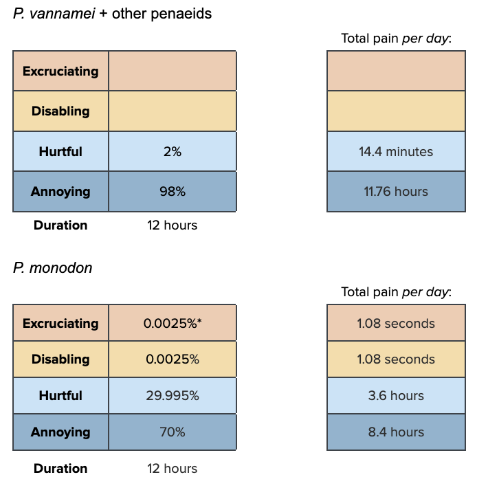

To avoid double counting and because we assume most farmers using very high densities are using methods to prevent low DO and high ammonia, we are not counting the water-quality effects of high densities here.
We use observations by Rivera-Velázquez et al. (2008) and Medina-Reyna (2001) that shrimp in the wild are found at densities between 0.001 and 4.9 individuals per m2 as a reference value, assuming that this density range represents shrimp preferences.
We use the stocking densities from Table 3 of our main report to compare the wild shrimp densities with that of different farm types: - Extensive: ~<5 to 20 post-larvae per m2 - Semi-intensive: ~5 to 40 post-larvae per m2 - Intensive: ~40 to 130 post-larvae per m2 - Super-intensive: ~130 to >300 post-larvae per m2
Prevalence
Stocking density increases with increasing farm intensity.
Extensive farms use low densities but may still have shrimp at somewhat higher levels than their wild counterparts. We think intensive and super-intensive farms are definitely using high densities, since it is a defining feature of these farm types.
Percentages marked with * assume death from cannibalism happens roughly every four weeks and causes one minute of excruciating and disabling pain together when it does happen.
Percentage marked with ** assumes death from cannibalism happens once every eight weeks and causes one minute of excruciating and disabling pain together when it does happen.
We assume high densities, where present, are present for the whole of a shrimp’s life. Some shrimp farmers conduct partial harvests or reduce stocking density as shrimp get larger, so we add some uncertainty.
Intensity notes
High densities seem to reduce growth and lower immune function even when water quality parameters are carefully controlled (Liu et al. (2017); da Silveira et al., 2020). This finding is consistent with shrimp experiencing negative welfare due to the chronic stress of crowding and suffering adverse health effects as a byproduct.
Cannibalism rates may also be higher in higher stocking density environments, at least for P. monodon (Abdussamad & Thampy, 1994).
In terms of behavioral restrictions, da Costa et al. (2016) report that retreat behaviors decrease when density increases—shrimp may prefer to be away from others but cannot do so at higher stocking densities as retreating would just put them close to other individuals. Bardera et al. (2021) confirmed that there are consistent individual differences in P. vannamei regarding which shrimp avoid contact with other shrimp at densities that are representative of extensive and semi-intensive conditions. The formation of such hierarchies likely involves conflicts that are mostly negative, especially for losing individuals.
We attempt to account for the fact that shrimp may be on higher alert when in higher stocking densities by having a large portion of the pain intensity in ‘annoying’. Nevertheless, we apportion some pain to the ‘hurtful’ category to account for negative contact with other individuals and reduced access to resources, and to the ‘disabling’ and ‘excruciating’ categories for cannibalism and death.
Weight the pain tracks by prevalence estimations and proportion of farming attributable to each farm type, as well as the average days lived by a shrimp.
Here, we are considering both a lack of natural, burrowable substrate and a lack of artificial structures the shrimp can climb or cling to.
Prevalence
Earthen ponds, typically used for extensive and sometimes semi-intensive ponds likely have a burrowable substrate on the pond bottom. Some semi-intensive ponds are lined with plastic, however. Intensive and super-intensive ponds are plastic or concrete lined, or are raised tanks, which would not have substrate available to shrimp.
95% of semi-intensive farms in SWP’s India Scoping Report and the one intensive farm interviewed, said they had substrate where shrimps can bury themselves.
Using artificial screens or other structures shrimp can cling to is not standard practice in any farm type. It is possible that extensive and some semi-intensive ponds may have plants growing in them, which shrimp could use for this purpose, though we are very uncertain about this.
Where no substrate is present, shrimp in different farming systems are likely to have the same experience so we do one pain track for all farm types. However, P. monodon burrow more than P. vannamei so we do species-specific pain-tracks, one for P. vannamei and other penaeids and one for P. monodon, then weight by the proportion of farmed shrimp that are that species or group. P. monodon would usually burrow for around half the day in the wild.

Durations marked * assume death from cannibalism happens once every four weeks and causes one minute of excruciating and disabling pain together when it does.
If no substrate is present, this will be the case for 100% of a shrimp’s life.
Intensity notes
P. monodon shrimp burrow daily in the wild (FAO, 2023), so having no burrowable substrate probably behaviorally deprives them significantly. It is less clear to what extent P. vannamei burrow.
We, therefore, attribute most pain from a lack of substrate to ‘annoying’, with a small portion attributed to ‘hurtful’. For P. monodon, we attribute half of the pain to ‘hurtful’ to account for not being able to express species-typical behaviors. We assign a tiny portion to ‘disabling’ and ‘excruciating’ because cannibalism incidences may be more common when no substrate is present, even at the same stocking density (Abdussamad & Thampy, 1994).
Weight the pain tracks by prevalence estimations and proportion of farming attributable to each farm type, as well as the average days lived by a shrimp.
We were unable to find estimates of the incidence of predators or data on how much mortality predators typically cause. However, a consulted expert suggested that predators are usually well-managed in current shrimp farming practices. We expect that where this issue is present, it is usually in extensive farms.
We give super-intensive farms a value of zero because super-intensive are indoor, closed, predator-free systems.
Durations marked * assume 10 seconds of excruciating pain (at the longest duration) if a shrimp is eaten by a predator, and that one in every 50 shrimp is eaten
Durations marked ** assume one minute of high predator vigilance (i.e. ceasing some activities they would otherwise do) a day at the longest duration – shrimp are likely not vigilant to birds very much if the water turbidity is high, but they are a prey species so likely exhibit predator vigilance and avoidance, so we start with an estimate of a minute a day
Those marked *** assume two minutes of high predator vigilance a day at the longest duration, hypothesizing that vigilance increases the longer predators are present
Those marked **** assume 5 minutes of high predator vigilance a day at the longest duration.
We account for pains caused by being attacked or eaten by a predator and for pains caused by vigilance and avoidance.
Intensity notes
We expect that shrimp who are predated upon are killed reasonably quickly by predators, so we assign most pain to annoying and hurtful, with a small proportion given to disabling and excruciating to represent imminent death. The annoying pain proportion also represents the stress of shrimp being vigilant of predators.